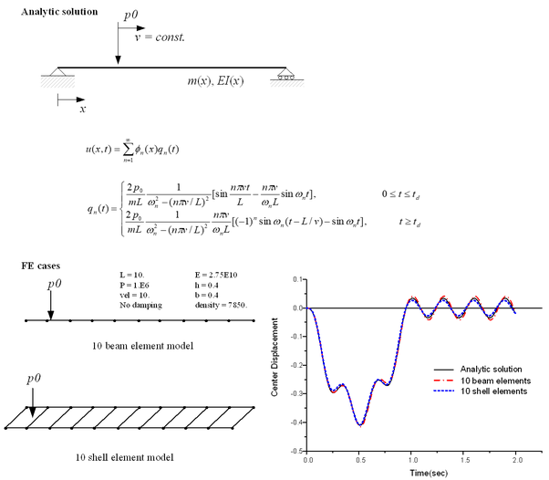
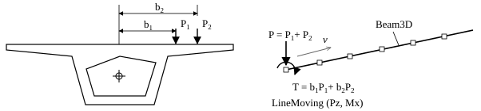
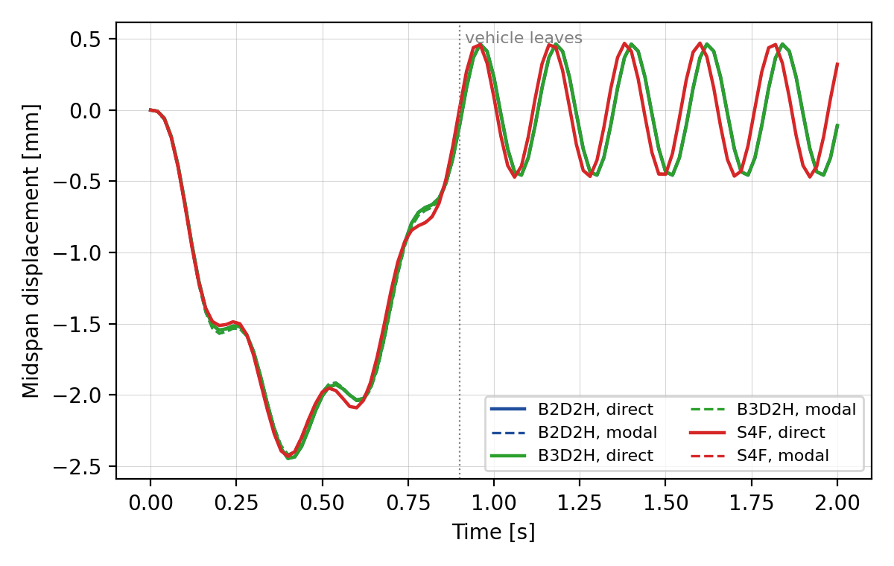

V.13 Moving Load Analysis in Simply Supported Beam
V.13.1 Moving Load
길이 10 m인 단순보 위를 일정한 속도 \(v=10\) m/s로 지나는 집중하중 \(P=10^6\) N에 대해 동해석을 수행하고, 중앙점 변위를 해석해와 비교하였다. 보는 0.4 m × 0.4 m 단면이며 \(E=2.75\times10^{10}\) Pa, 밀도 7850 kg/m³이고 감쇠는 없다. 보요소 모델은 B3D2H 요소 10개에 LineMoving 하중을, 쉘요소 모델은 S4F 요소 10개에 SurfaceMoving 하중을 사용한다.

Figure V.13.1 Moving Load Verification ExampleTable V.13.1은 중앙점 최대 처짐을 비교한 것이다. 보요소 모델은 시간적분 방식과 관계없이 해석해와 0.2% 이내로 일치하고, S4F 모델은 해석해보다 약 1.4% 작다. S4F 모델의 차이는 요소 10개의 이산화 오차로, 같은 모델을 요소 20개와 40개로 나누면 최대 처짐이 각각 0.4146 m, 0.4162 m가 된다. 준정적 해석(Static, Quasi)의 최대 처짐은 0.3551 m로, 하중이 중앙에 있을 때의 정적 처짐 \(PL^3/48EI=0.3551\) m와 같다.
Table V.13.1 Maximum Midspan Deflection
| 해석 | 최대 처짐 (m) | 발생 시각 (s) |
|---|---|---|
| 해석해 | 0.4149 | 0.51 |
B3D2H, 직접적분 (LineMoving.inp, BeamMoving.inp) |
0.4149 | 0.51 |
| B3D2H, HHT | 0.4147 | 0.52 |
| B3D2H, 모드중첩법 | 0.4141 | 0.51 |
| S4F, 직접적분 | 0.4089 | 0.51 |
| S4F, HHT | 0.4087 | 0.51 |
| S4F, 모드중첩법 | 0.4088 | 0.51 |
보의 도심에서 이격되어 지나는 하중을 보요소로 간략히 모델링할 때는 Figure V.13.2와 같이 수직하중과 비틀림 모멘트를 함께 이동시킨다. LineMoving 하중의 Direct form에서 모멘트 성분 Mx, My, Mz를 지정하면 된다. 모멘트 성분은 라인이 보요소로 구성된 경우에만 적용된다. BeamMoving.inp는 수직하중 \(10^6\) N과 비틀림 모멘트 \(T=0.2\times10^6\) N·m를 함께 이동시킨다. 비틀림 회전은 왼쪽 끝(절점 1)에서만 구속되므로, 하중 위치가 \(s\)일 때 준정적 해석의 중앙점 비틀림 회전은 \(\theta=T\min(s,L/2)/GJ\)이다. \(G=E/2(1+\nu)\), \(J=0.02253\) m⁴를 대입하면 하중이 중앙을 지난 뒤 \(\theta=3.7671\times10^{-3}\) rad이고, 해석 결과와 같다.

Figure V.13.2 Simplified analysis using beamInput File
LineMoving.inp: B3D2H +LineMoving, 준정적(Static, Quasi) 및 동해석BeamMoving.inp: B3D2H +LineMoving(수직하중 + 비틀림 모멘트), 고유치해석, 준정적 및 동해석BeamMoving-HHT.inp:BeamMoving.inp와 같은 모델, HHT 시간적분BeamMoving-Modal.inp:BeamMoving.inp와 같은 모델, 모드중첩법ShellMoving.inp: S4F +SurfaceMovingShellMoving-HHT.inp:ShellMoving.inp와 같은 모델, HHT 시간적분ShellMoving-Modal.inp:ShellMoving.inp와 같은 모델, 모드중첩법
V.13.2 Moving SDF System
길이 25 m인 단순보 위를 1자유도 차량(질량-스프링-감쇠기)이 27.78 m/s로 지나는 경우를 해석한다. 이 예제는 외부 기준해 없이 요소 종류(B2D2H, B3D2H, S4F)와 해석 방법(직접적분, 모드중첩법)끼리 결과를 비교한다. 보와 차량의 질량·스프링 제원은 Yang et al. (2004)의 예제에서 가져왔다. 보는 \(E=2.87\times10^{9}\) Pa, \(I=2.90\) m⁴, 단위길이당 질량 2303 kg/m이고, 차량은 질량 5750 kg, 스프링 강성 1595 kN/m, 감쇠계수 1000 kN·s/m이다. 차량은 PointMass와 MovingSpring 요소로 모델링하고, 이동 속도는 *State, TYPE=MovingSpringSpeed로 지정한다. 동해석은 차량 자중에 대한 정해석 결과에서 시작한다.
보를 B2D2H, B3D2H, S4F 요소 10개로 각각 모델링하고, 직접적분과 모드중첩법 결과를 비교하였다. 보요소 모델은 단면을 \(A=1\) m², \(I=2.90\) m⁴로 주고, S4F 모델은 폭 4 m, 두께 2.0567 m의 판에 같은 단위길이당 질량과 휨강성이 되도록 밀도를 조정하였다. 모드중첩법은 보 요소집합의 모드 4개를 사용한다.
Figure V.13.3은 보 중앙점의 수직변위이다. 차량이 보 위에 있는 동안(0–0.9 s)은 여섯 해석 결과가 거의 일치하고, 같은 요소 종류에서는 직접적분과 모드중첩법 결과가 같다. 차량이 보를 벗어난 뒤의 자유진동 주기는 보요소 모델이 0.220 s, S4F 모델이 0.215 s이다. 이 차이는 단면의 회전관성 때문이다. 보요소 모델은 회전반경 \(\sqrt{I/A}=1.70\) m인 단면의 회전관성을 포함하므로 1차 고유진동수가 4.672 Hz로, 회전관성을 고려한 보 이론값 4.672 Hz와 같다. S4F 모델은 회전관성이 작아 1차 고유진동수가 4.787 Hz로, 회전관성을 무시한 보 이론값 4.778 Hz에 가깝다.

Figure V.13.3 Moving SDF SystemInput File
sbeam.inp: B2D2H, 직접적분sbeam-Modal.inp: B2D2H, 모드중첩법sbeam3d.inp: B3D2H, 직접적분sbeam3d-Modal.inp: B3D2H, 모드중첩법ssurface.inp: S4F, 직접적분ssurface-Modal.inp: S4F, 모드중첩법
References
- Y. B. Yang, J. D. Yau, and Y. S. Wu (2004) "Vehicle-Bridge Interaction Dynamics", World Scientific